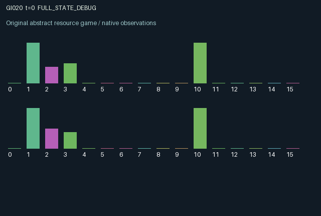

GI020 / LEGACY_ARRAY
Bilateral escrow with delayed authorization
2 agents5 actions16 observation columns32 original horizonRuntime: PASS
Release verification episode
Untrained uniform legal actions. Actual JAX state sampled along the full original episode; full-state debug camera. No human performance or learning claim.

Run this game
crucibles play --game 20
Start Python locally, then open the address printed by the terminal. Installation, multiplayer, takeover and keyboard controls →
Objective, rewards & ending
Exact task contract
{
"termination": "Original kernel t >= 32; see mechanism and source"
}Declared per-step reward bounds: -1.0 to 1.0. Observability: source_defined.
Rules
Original mechanism document (historical status wording retained)
# Bilateral escrow with delayed authorization Candidate: astra-d2-00020. This is a parentless source proposal with no supplied predecessor, score, or feedback. Action 0 waits. Actions 1 and 2 deposit one unit of cash into one of two public contract channels, and require an empty escrow plus sufficient cash. Action 3 seals the current deposit. Action 4 revokes an existing deposit, recovering 0.7 cash. A role cannot change the channel while its deposit remains open. The causal dependency is a shared settlement requiring both old-state deposits to name the same channel, both old-state seals to be present, both deposit ages to be at least two, and neither agent to revoke in the current transition. Newly authorizing a contract cannot settle it in that same transition. Settlement clears both deposits and returns each principal plus that agent's channel-dependent dividend. Revocation can prevent an otherwise ready joint settlement and penalizes a counterpart that had already sealed. Both agents therefore control the availability and timing of the other's payout, as well as their own persistent cash and commitment state. Each agent has a private, fixed preferred channel. A settlement yields reward 0.80 on the preferred channel and 0.35 on the other channel. The preferred channel is not directly shown to the other agent; settlement rewards become public observations. Conflicting preferences create a coordination and distribution question without an imposed desired winner. Cash regenerates by 0.06 each transition and is capped at six. Deposits reduce cash immediately. Opening, sealing and revocation have small immediate reward costs, so waiting, coordinating and abandoning a stalled contract have different consequences. The sixteen observation columns are time fraction, role sign, own cash, other cash, own channel, other channel, own seal, other seal, own escrow age, other age, own preference, whether the current own channel is preferred, own last settlement reward, other last settlement reward, own last revocation and other last revocation. Cash, channels, ages and preferences are normalized in the source. No final-test or external task information is used. Reward equals the settlement dividend less opening, authorization, revocation and interrupted-commitment costs, with a final clip to [-1, 1]. The states underlying these terms are bounded. Both roles terminate together at transition 32; no terminal reset is performed. This uses familiar generic escrow, commitment and coordination-game ideas. Its proposed interaction is the conjunction of individually revocable persistent deposits, separately delayed authorization, private channel values and a shared release event. The description makes no claim about nonisomorphism, pool qualification, compiler behavior or learning effectiveness. The author has not executed this environment; isolated validation belongs to the experimenter.
Commands
0Action 0; see mechanism and source
1Action 1; see mechanism and source
2Action 2; see mechanism and source
3Action 3; see mechanism and source
4Action 4; see mechanism and source
Roles & abilities
agent_0 Original legacy agent; see mechanism and source
agent_1 Original legacy agent; see mechanism and source
Observation permissions
Training receives only the original observation rows. Role cameras use declared visibility; debug cameras are explicitly marked. Local benchmark records log debug exposure and role takeover history.
Exact observation layout
[]
Entity visibility & attributes
[]
Actual verification & provenance
Per-game execution receipt
{
"game": "gi020",
"status": "PASS",
"verification_revision": 2,
"source_sha256": "0dc8c89fd037ca274a3f530a20329ae567afdb7a9bb311b9bc2eba3b129bcbdf",
"seed": 20261101,
"runtime": {
"jax": "0.4.38",
"numpy": "1.26.4",
"devices": [
"TFRT_CPU_0"
]
},
"dimensions": {
"num_agents": 2,
"observation_size": 16,
"num_actions": 5,
"max_steps": 32
},
"checks": {
"eager_reset": {
"status": "PASS",
"seconds": 0.9561963081359863
},
"observation_spaces_legal_masks": {
"status": "PASS",
"seconds": 0.18794846534729004
},
"eager_step": {
"status": "PASS",
"seconds": 0.6910779476165771
},
"jit_reset": {
"status": "PASS",
"seconds": 0.357086181640625
},
"jit_step": {
"status": "PASS",
"seconds": 0.338498592376709
},
"eager_jit_integer_parity_float_measurement": {
"status": "PASS",
"seconds": 0.0009992122650146484
},
"jit_vmap_reset": {
"status": "PASS",
"seconds": 0.5032370090484619
},
"jit_vmap_step": {
"status": "PASS",
"seconds": 0.2200462818145752
},
"outer_autoreset_api": {
"status": "PASS",
"seconds": 0.9315288066864014
},
"full_original_horizon_episode_and_render": {
"status": "PASS",
"seconds": 1.1302757263183594
}
},
"human_scores": null,
"browser_controls": "PENDING",
"failures": [],
"elapsed_seconds": 5.804501533508301,
"float_parity_max_abs": 2.9802322387695312e-08,
"numerical_parity": "UNDETERMINED_NONZERO_FLOAT_DIFFERENCE",
"raw_terminal_absorbing": "NOT_PART_OF_ORIGINAL_LEGACY_CONTRACT",
"terminal_outer_reset": "PASS",
"episode_steps": 32,
"scripted_random_returns": [
-1.07999999076128,
-0.9699999932199717
],
"terminal": true,
"demo_information": "FULL_STATE_DEBUG",
"demo_frames": 33,
"render_roles_checked": 2
}Chromium control verification
{
"game": "gi020",
"status": "PASS",
"human_scores": null,
"engineering": true,
"checks": [
"catalog_selected_and_real_native_reset",
"dom_queue_and_native_step",
"second_participant_ownership_and_native_joint_step",
"all_roles_individually_controllable_no_role_cap",
"explicit_debug_camera",
"release_to_pure_ai_without_reset"
],
"ui_sha256": "15b5861d23b3c42811865c954d5a988280bbfd21cf8e93754be2437a027158c5",
"seconds": 3.037046194076538
}Original identity and file hashes
{
"id": 20,
"key": "gi020",
"title": "Bilateral escrow with delayed authorization",
"summary": "",
"tags": [],
"family": "legacy_array",
"dimensions": {
"num_agents": 2,
"observation_size": 16,
"num_actions": 5,
"max_steps": 32
},
"source_sha256": "0dc8c89fd037ca274a3f530a20329ae567afdb7a9bb311b9bc2eba3b129bcbdf",
"manifest_sha256": "084e43300781a267b82f16f6c77026f373ee373f06ea817aeddce71fe14b6984",
"files": [
{
"file": "candidate.py",
"sha256": "0dc8c89fd037ca274a3f530a20329ae567afdb7a9bb311b9bc2eba3b129bcbdf",
"bytes": 4692,
"origin": "work/exp_2/astra_generation/discovery_v2/initial/candidate_00020/attempt_00/candidate.py"
},
{
"file": "mechanism.md",
"sha256": "e4b3027c9f4f87751e689e700288209318060a43873bba226b6011cacf10d254",
"bytes": 2927,
"origin": "work/exp_2/astra_generation/discovery_v2/initial/candidate_00020/attempt_00/mechanism.md"
}
],
"original_status": "LEGACY_SOURCE",
"original_saved_replay": false,
"release_validation": "PASS",
"human_scores": null,
"browser_validation": "PASS"
}